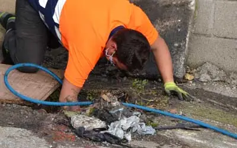
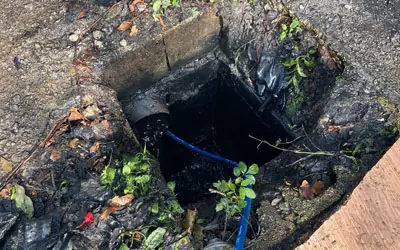
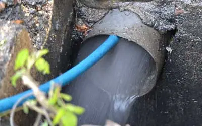
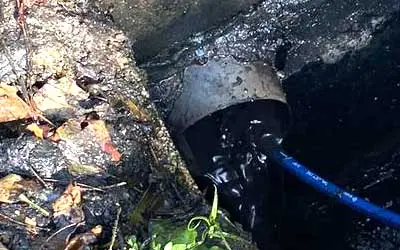
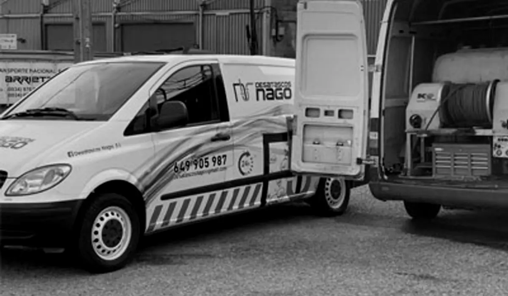

Desatascos, arquetas y red de saneamiento para particulares, comunidades y empresas. Equipo cercano y maquinaria moderna para causar el mínimo daño.
Llamar ahora ↗Servicio las 24 horas365 días al año




Tubería sin zanjaIrun y Euskadi
Cómo trabajamos
Aquí estamos, a su disposición: usted nos cuenta qué necesita. Después nos encargamos: utilizamos todos nuestros recursos para detectar y solucionar el problema, con cámara dentro de la tubería si hace falta.
Localizamos arquetas ocultas y rehabilitamos tuberías sin zanja, para ahorrar grandes obras. Fase final: solucionamos su problema lo antes posible y le dejamos un informe por escrito, con 10 años de garantía en la reparación.

Fregaderos, duchas, inodoros y bajantes, para particulares y empresas.
02Localización, apertura y mantenimiento, también de las ocultas.
03Revisión, limpieza y reparación de la red y del alcantarillado.
04Cámara dentro de la tubería para ver el problema antes de actuar.
05Rehabilitación de tuberías sin abrir el suelo.
06Fosas sépticas, vaciados y limpiezas.
07Para su tranquilidad, con atención a cualquier hora.
08Cuando no hay otra solución, la obra necesaria y nada más.
Un equipo humano de trato cercano, con mucha experiencia y moderna maquinaria para causar el mínimo daño al cliente. Estamos a su disposición.